ProjectionStrategy¶
- class ProjectionStrategy(*args)¶
Base class for the evaluation strategies of the approximation coefficients.
- Available constructors:
ProjectionStrategy(projectionStrategy)
- Parameters
- projectionStrategy
ProjectionStrategy A projection strategy which is a
LeastSquaresStrategyor anIntegrationStrategy.
- projectionStrategy
Notes
Consider 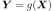 with 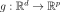, 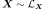 and 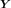 with finite variance: 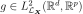.
The functional chaos expansion approximates using an isoprobabilistic transformation T and an orthonormal multivariate basis 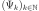 of 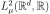. See
FunctionalChaosAlgorithmto get more details.The meta model of 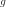, based on the functional chaos decomposition of 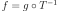 writes:
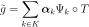
where K is a non empty finite set of indices, whose cardinality is denoted by P.
We detail the case where
 .
.The vector 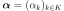 is equivalently defined by:
(1)¶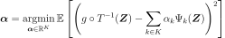
and:
(2)¶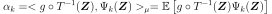
where 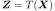 and the mean 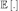 is evaluated with respect to the measure 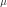.
It corresponds to two points of view:
relation (1) means that the coefficients 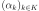 minimize the quadratic error between the model and the polynomial approximation. Use
LeastSquaresStrategy.relation (2) means that 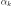 is the scalar product of the model with the k-th element of the orthonormal basis . Use
IntegrationStrategy.
In both cases, the mean is approximated by a linear quadrature formula:
(3)¶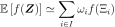
where f is a function in 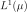.
In the approximation (3), the set I, the points 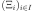 and the weights
 are evaluated from different methods
implemented in the
are evaluated from different methods
implemented in the WeightedExperiment.The convergence criterion used to evaluate the coefficients is based on the residual value defined in the
FunctionalChaosAlgorithm.Methods
Accessor to the object's name.
Accessor to the coefficients.
Accessor to the experiments.
getId()Accessor to the object's id.
Accessor to the underlying implementation.
Accessor to the input sample.
Accessor to the measure.
getName()Accessor to the object's name.
Accessor to the output sample.
Accessor to the relative error.
Accessor to the residual.
Accessor to the weights.
setExperiment(weightedExperiment)Accessor to the design of experiment.
setInputSample(inputSample)Accessor to the input sample.
setMeasure(measure)Accessor to the measure.
setName(name)Accessor to the object's name.
setOutputSample(outputSample)Accessor to the output sample.
setWeights(weights)Accessor to the weights.
computeCoefficients
- __init__(*args)¶
- getClassName()¶
Accessor to the object’s name.
- Returns
- class_namestr
The object class name (object.__class__.__name__).
- getExperiment()¶
Accessor to the experiments.
- Returns
- exp
WeightedExperiment Weighted experiment used to evaluate the coefficients.
- exp
- getId()¶
Accessor to the object’s id.
- Returns
- idint
Internal unique identifier.
- getImplementation()¶
Accessor to the underlying implementation.
- Returns
- implImplementation
A copy of the underlying implementation object.
- getMeasure()¶
Accessor to the measure.
- Returns
- muDistribution
Measure defining the scalar product.
- getName()¶
Accessor to the object’s name.
- Returns
- namestr
The name of the object.
- getRelativeError()¶
Accessor to the relative error.
- Returns
- efloat
Relative error.
- getResidual()¶
Accessor to the residual.
- Returns
- erfloat
Residual error.
- setExperiment(weightedExperiment)¶
Accessor to the design of experiment.
- Parameters
- exp
WeightedExperiment Weighted design of experiment.
- exp
- setMeasure(measure)¶
Accessor to the measure.
- Parameters
- mDistribution
Measure defining the scalar product.
- setName(name)¶
Accessor to the object’s name.
- Parameters
- namestr
The name of the object.